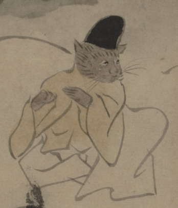

獣の化物。烏帽子をかぶり、薄茶色の上着と白い袴を着て、座っている。何かを持つように両手をあげている。本来は横笛を持っていたと考えられる。
出典：親書誌：U426_nichibunken_0150：付喪神絵詞；ツクモガミエコトバ／日付：2010／資源識別子：U426_nichibunken_0150_0048_0000
Copyright (c)2010- International Research Center for Japanese Studies, Kyoto, Japan. All rights reserved.